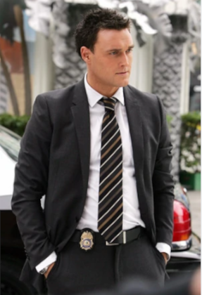

O elenco principal do seriado "The Mentalista" possui uma equipe de investigação com cinco integrantes, são eles:
Patrick Jane (Simon Baker), é um consultor que ajuda nas investigações.
Conheça Jane
Teresa Lisbon interpretada por Robin Tunney, chefe da equipe de investigação.
Conheça Lisbon
Grace Van Pelt interpretada por Amanda Righetti, a mais nova integrante da equipe e a mais habilidosa em computadores.
Conheça Van Pelt
Kimball Cho interpretado por Tim Kang, é o segundo na linha de comando da equipe.
Conheça Cho
Wayne Risgsby interpretado por Owain Yeoman, é o policial investigador que trás um pouco de leveza para a equipe mesmo sendo o mais forte.
Conheça Risgsby

Curiosidades
Simon Lucas Baker (Patrick Jane) nasceu em Launceston na Austrália no dia 30 de julho de 1969.
Imagens
Robin Tunney (Teresa Lisbon) nasceu na cidade de Chicago que fica no estado de Lllinoisnos nos Estados Unidos no dia 19 de junho de 1972, também é conhecida pela personagem de Veronica Donovan que fez em Prison Break.
Amanda Righetti(Grace Van Pelt) nasceu em 4 de abril de 1983, na cidade Setor George no estado de Utah nos Estados Unidos.
Tim Kang (Kimball Cho) nasceu em 16 de março de 1973, na cidade de São Francisco no estado da Califórnia nos Estados Unidos.
Owain Yeoman (Wayne Risgsby) nasceu em 2 de julho de 1978, na cidade de Chepstow no Reino Unido.